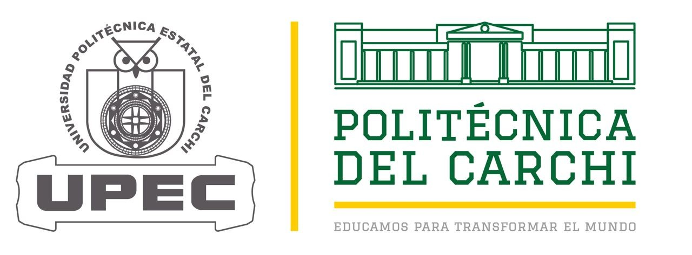

Ciberacoso Laboral
Hostigamiento o burlas por chats o correos.
Mensajes intimidatorios, ridiculización en grupos de trabajo, memes ofensivos o presión agresiva fuera del horario laboral.
Ver detalle ▾

Departamento de Tecnologías de la Información y Comunicación (TIC)
Construyendo una cultura de respeto, privacidad y empatía en nuestros entornos digitales
Es toda agresión, hostigamiento, vulneración de privacidad o daño emocional ejercido a través de celulares, redes sociales, correos o plataformas digitales.
Hostigamiento o burlas por chats o correos.
Compartir datos, fotos o capturas privadas.
Perfiles falsos para dañar la reputación.
Aislamiento deliberado en canales oficiales.
Analiza cada situación cotidiana de oficina y decide si promueve el respeto o constituye violencia digital.
Acciones positivas para prevenir la violencia digital y qué hacer si eres víctima o testigo.
No borres mensajes; toma capturas de pantalla con fecha, hora y usuario visible.
Corta el contacto en la plataforma y reporta la cuenta o contenido ofensivo.
Acude a Bienestar Universitario, Talento Humano o al equipo de TIC para soporte técnico.
Participa junto al equipo de TIC dejando tu compromiso por un entorno digital seguro y respetuoso.
Promoveré la empatía y el respeto en cada chat y correo.
No reenviaré burlas, capturas ni rumores.
Respetaré la privacidad y los horarios de mi equipo.